★ 1,200 Years of History🏰 Prague Castle🌉 Charles Bridge
Munasinghe-Fernando Family · Prague · 13–14 Jul 2026
No. 03 · A Letter from the Road
Welcome to the City of a Hundred Spires.
Prague survived. That's the line we kept coming back to. It survived the Hussite wars, the Thirty Years' War, Nazi occupation, communist rule, and most miraculously, the wave of Allied bombing that flattened so much of Central Europe in 1945. Walking its cobblestones is walking through the only major European capital that still looks the way it did in the 1700s.
For two summer days we lived inside that surviving city: in a Gold Art Apartment overlooking the Old Town, near the river that splits the city in two. Our days began with cobblestone walks before breakfast, when the Charles Bridge was empty and the morning mist made the statues look like ghosts.
A word on where we are: this is Bohemia. Prague has been the capital of the Kingdom of Bohemia for over a thousand years — the throne of the Bohemian kings, who ruled from the castle on the hill. Its golden age came under Charles IV in the 1300s, King of Bohemia and Holy Roman Emperor, who made Prague his imperial capital and built the very things we came to see: the Charles Bridge, St. Vitus Cathedral, and the university that still bears his name. Bohemia is the historic land; Prague is, and always has been, its crown.
— The Munasinghe-Fernandos, 2026
In this issue
Welcome — The City of Spires02
The Road & Prague Castle04
Charles Bridge & the Bridge Saints07
The Astronomical Clock09
The Old Town & Its Churches10
Josefov — the Jewish Quarter14
Tastes of Bohemia16
Reflections + What's Next17
The Journey · Chapter Three
Across a border, into Bohemia.
The story so far: we began at the Great Wall and the Forbidden City in Beijing, flew west into a jet-lagged first day in Munich, then climbed into the Austrian Alps — Salzburg's Sound of Music garden, the lake at Hallstatt, and two nights in a hilltop castle.
Now we cross our first European land border. Czechia is our third chapter, and it is really one shining city: Prague, the City of a Hundred Spires — Charles Bridge at dawn, a castle above the river, and an astronomical clock that has kept time since 1410. This page rides at the front of every issue: where we've been, where we are, and where we're headed next.
The Route · 15 Countries · 33 Cities · 30 Nights
01China ✓
02Austria ✓
03Czechia ★
04Hungary
05Slovenia
06Italy
07Switzerland
08Germany
09France
10Netherlands
11Belgium
12Denmark
13Sweden
14Vatican
⌂Home
Today — Czechia: a dawn drive out of Austria, and two days in Prague ahead.
— Issue 03 · CZECH REPUBLIC · The Journey —
ON THE ROAD · AUSTRIA → PRAGUE · DAY 3
Dawn, one last breakfast, and north to Prague.
Day three began the way the last two had — everyone awake at five, and that magnificent castle breakfast — before we said goodbye to Burg Altpernstein and pointed the car north.
Mon 13 Jul 2026Burg Altpernstein → PragueFarewell to the castle
By the third morning it had become a rhythm: awake at five, all of us, the children as bright as the adults, and down to that extraordinary breakfast — cheese and ham, fruit and cereal, more than we could carry — one last time. Then we hauled the bags back down the castle's lift-less stairs, loaded the car, and said our goodbyes to Burg Altpernstein, the hilltop fortress that had been our first European home.
Three mornings in a castle, three five-o'clock starts, and one breakfast we will miss for the rest of the trip.
And then we drove north. Austria fell away behind us — its lakes, its salt villages, its Sound of Music hills — and the road pointed toward Bohemia and Prague: the city of a hundred spires, two days of cobblestones and Gothic towers waiting at the end of it. The children settled happily into their beloved car seats. The next chapter had begun.
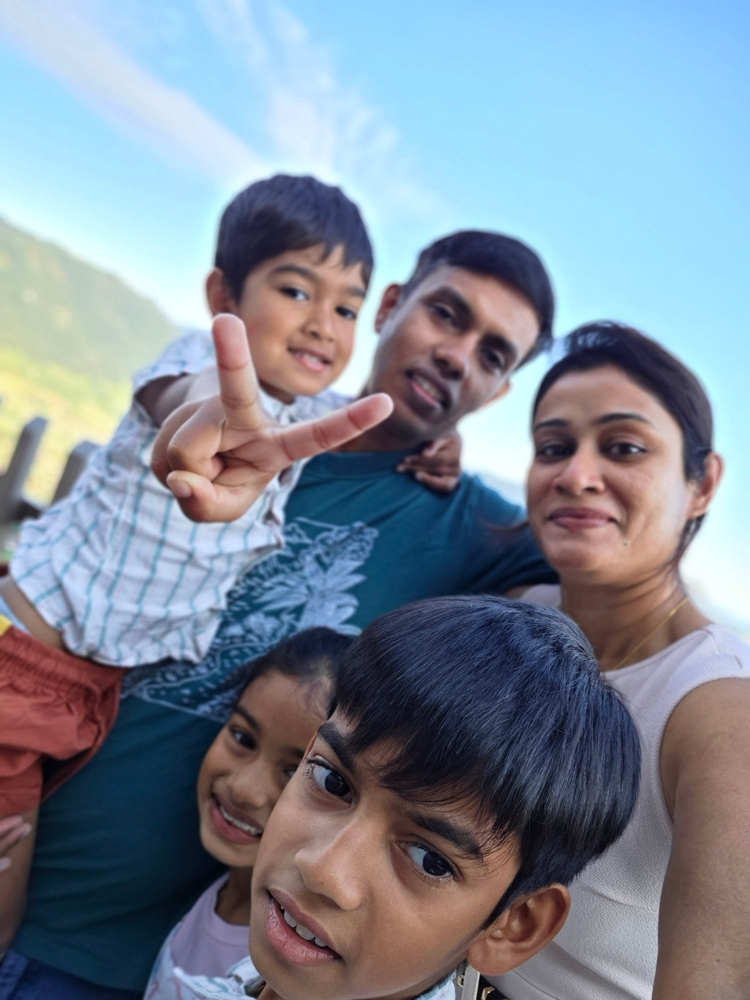
Photo · Munasinghe-Fernando
The five of us at Burg Altpernstein, squeezed in for one photograph before we packed the car — Avinesh, Lana, Avisha, Aviann and Avin, the road to Prague ahead of us.
— Issue 03 · CZECH REPUBLIC · The Road —
PRAGUE CASTLE · DAY 3 · IN OUR OWN WORDS
The castle, the cathedral, and a little train.
That afternoon we climbed to Prague Castle and St. Vitus Cathedral — and when small legs gave out, a mini tourist train carried us round, narrating the city in English as it went.
Mon 13 Jul 2026Pražský hrad + St. VitusAfternoon · foot + mini-train
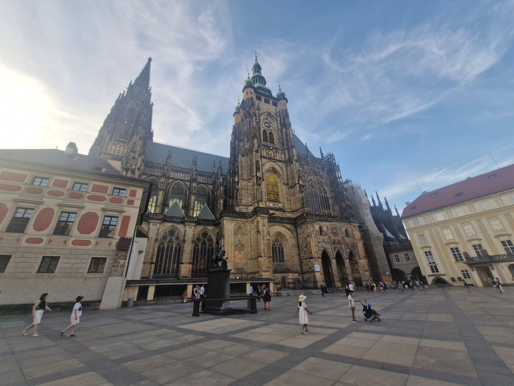
Photo · Munasinghe-Fernando
St. Vitus Cathedral from the Third Courtyard — six hundred years of Gothic stonework soaring over the square, its golden mosaic of the Last Judgement catching the afternoon sun. Our three are down in the crowd crossing below: Aviann in her white dress and hat, the boys wheeling the stroller.
We made for the hill and Prague Castle — at seventy thousand square metres, the largest castle complex on earth, a thousand years of Bohemian kings gathered around the soaring spires of St. Vitus Cathedral. We walked its courtyards and stepped inside its great churches — the cathedral, and St. George's Basilica beside it — the children's necks tipped all the way back to take in the stained glass. And here was the surprise: for all the castle's fame, it was the cathedrals that took our breath away. Grander than the fortress that holds them, they felt like the true crown of the hill.
When small legs give out, a little train and an English guide can save the whole afternoon.
Three small pairs of legs can only climb so far, so when the tiredness set in we found the perfect rescue: a little tourist train on rubber wheels that carried us gently round the sights and explained everything in English as it went. And a tip we worked out the hard way — in Prague you buy your tram ticket on board the tram itself, and, to our delight, the children travelled free.
— Issue 03 · CZECH REPUBLIC · The Castle —
PRAGUE CASTLE · INSIDE ST. VITUS CATHEDRAL
The ceiling simply leaves you.
Step inside St. Vitus and you lose the top of it — pillars soaring up into a ribbed stone vault, and away at the far end the rose window glowing above the silver organ.
The full length of the nave — clustered pillars rising into a ribbed vault that runs away into shadow, and at the west end, small with distance, the great rose window above the bright pipes of the organ. This, we decided, was the most beautiful room in all of Prague.
We had marvelled at the castle and loved St. George's, but it was inside St. Vitus that the children went quiet. The cathedral is vast — pillars rising higher than seems possible into a ribbed stone ceiling lost in shadow — and the eye is pulled all the way down the nave to a rose window more than ten metres wide, throwing pools of red and blue and violet light onto the gleaming ranks of the organ below.
The pillars simply rise into the dark, and the whole west wall turns to coloured light.
It took nearly six hundred years to build — begun in 1344, and not finished until 1929 — and standing in the middle of it you can feel every one of those centuries. Grander than the castle that surrounds it, as we said before; and inside, grander than we had any way to imagine from the square.
— Issue 03 · CZECH REPUBLIC · Inside St. Vitus —
PRAGUE CASTLE · ST. VITUS · THE MUCHA WINDOW
Painted light, by Alfons Mucha.
Among the cathedral's stone-old windows hangs one that glows differently — the only stained glass the great master of Art Nouveau ever made.
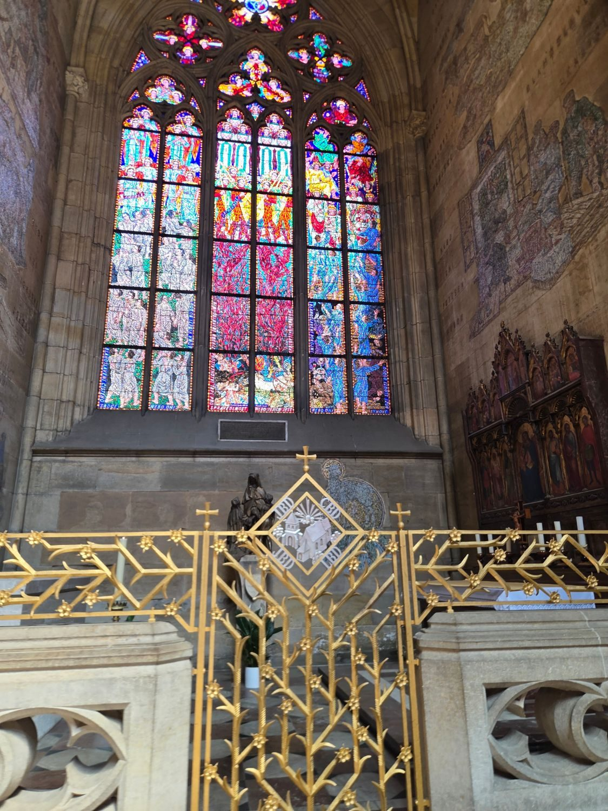
Photo · Munasinghe-Fernando
The Mucha Window, 1931
At the centre kneel the boy St. Wenceslas and his grandmother, St. Ludmila, in a blaze of Mucha's colour.
What you are looking at
Not glass, but a painting in glass.
Where the rest of St. Vitus is filled with medieval leaded glass, Alfons Mucha — Bohemia's most famous painter, the master whose posters defined Art Nouveau in Paris — painted his design straight onto the glass in 1931, in the same glowing, sinuous line.
Around the two central saints swirl scenes from the lives of Cyril and Methodius, the brothers who brought Christianity — and the first written alphabet — to the Slavs. It remains the only stained-glass window Mucha ever made.
Who paid for it
Funded by the Slavia insurance bank — whose emblem, the goddess Slavia, hides in the glass near the figure of Christ.
— Issue 03 · CZECH REPUBLIC · The Mucha Window —
INSIDE ST. VITUS · THE SILVER TOMB
Nearly two tonnes of silver.
In a side of the cathedral stands the astonishing silver tomb of St. John of Nepomuk — angels, cherubs and a great draped canopy, all worked in solid silver.
Mon 13 Jul 2026Tomb of St. John of Nepomukc. 1736 · ~1.7 tonnes of silver
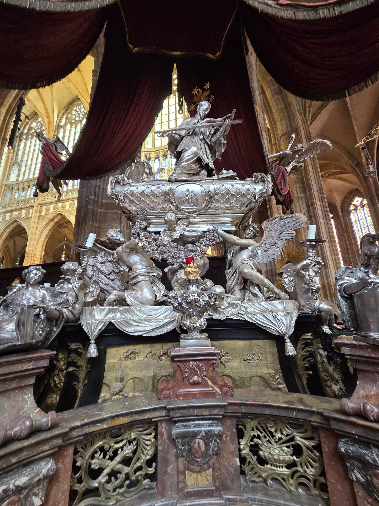
Photo · Munasinghe-Fernando
The silver tomb of St. John of Nepomuk — nearly two tonnes of silver worked into angels, cherubs and a great red-and-silver canopy, the saint kneeling on top with the martyr's cross in his arms.
We had already met St. John of Nepomuk down on Charles Bridge — the priest thrown from it into the river, whose brass cross the children had rubbed for luck that morning. Here, in the cathedral, is where he rests: under a canopy of solid silver, borne up by silver angels, the whole monument said to weigh close to two tonnes.
It glittered even in the dim light of the aisle. After the honest old stone of St. George's and the soaring grey of the nave, this baroque explosion of silver felt like something out of a treasure-story — and the children, who had wished on his cross only hours before, were delighted to find him again.
— Issue 03 · CZECH REPUBLIC · The Silver Saint —
INSIDE ST. VITUS · IN BRONZE
Dark bronze under pale stone.
Beneath one of the cathedral's great pointed arches we came upon a bronze group — three robed figures caught mid-gesture, glinting darkly against all that pale Gothic stone.
Mon 13 Jul 2026Katedrála sv. Víta · the north aisleA bronze memorial group
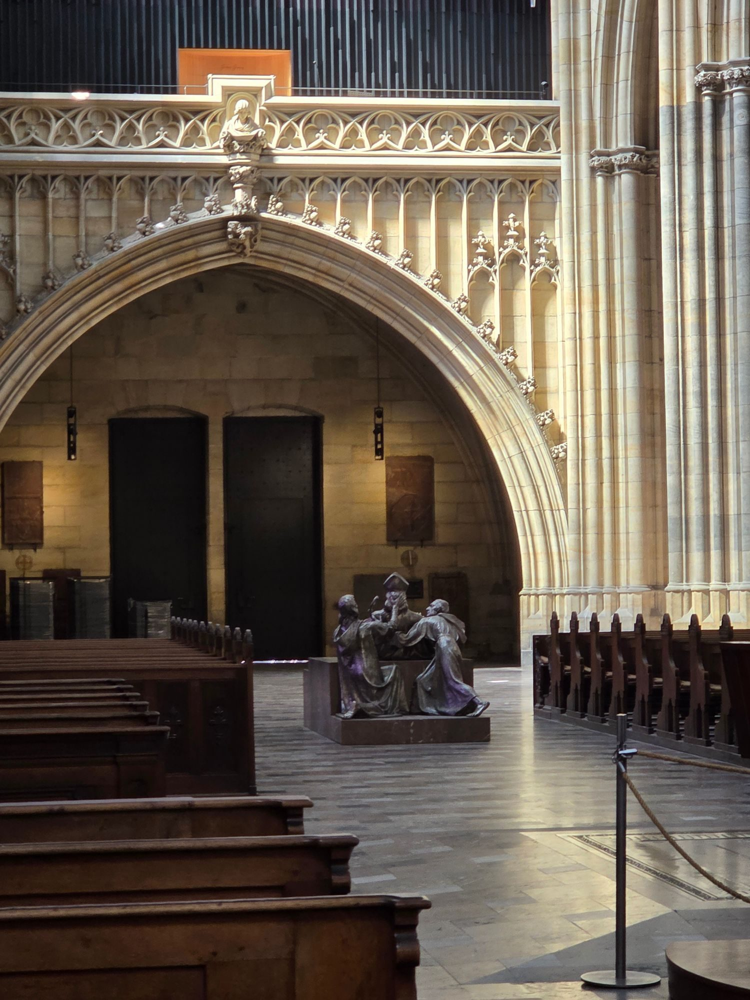
Photo · Munasinghe-Fernando
A bronze memorial group set out in the aisle beneath a soaring Gothic arch — three robed figures, a bishop among them, cast in dark metal that caught what little light reached the stone floor.
For all its silver and coloured glass, some of the most striking things in St. Vitus are the quiet dark ones. This bronze group stands out in the open beneath one of the great arches — three figures worked in metal that had gone almost black with age, so that against the honey-pale stone they seemed to glow from the inside.
The children circled it slowly, the way you do when you are not quite sure whether the figures might move. A last, still moment in the cathedral before we stepped back out, blinking, into the courtyard and the afternoon sun.
— Issue 03 · CZECH REPUBLIC · In Bronze —
PRAGUE CASTLE · THE SECOND COURTYARD
A fountain the colour of old gold.
In one of the castle's great cobbled courtyards we found the Kohl Fountain — baroque stone catching the low afternoon sun until the whole thing seemed to glow.
Mon 13 Jul 2026Kohlova kašna · Prague CastleThe oldest baroque fountain in the city
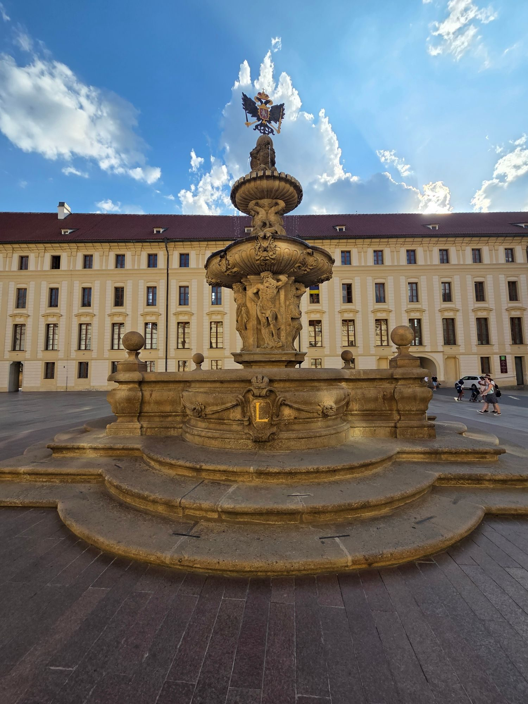
Photo · Munasinghe-Fernando
The Kohl Fountain in the castle's second courtyard — carved in 1686, three tritons holding up two great shell-shaped basins, the imperial double eagle spread at the very top.
Set in the middle of the second courtyard, the Kohl Fountain has been playing since 1686 — the oldest baroque fountain in Prague, all crouching tritons and lion-mask spouts, crowned by the black-and-gold imperial eagle. The children circled it once, twice, watching the thin ropes of water fall from basin to basin, and in the late sun the pale sandstone turned almost golden.
It is an easy thing to walk straight past on the way to the cathedral. We are glad we stopped. A quiet corner of a vast castle, a fountain three and a half centuries old, still doing the one simple thing it was built to do.
— Issue 03 · CZECH REPUBLIC · The Kohl Fountain —
PRAGUE CASTLE · THE FOUNTAIN, UP CLOSE
Tritons, shells and lion-mouths.
A closer look at the carving that has been pouring water since 1686 — sea-gods straining under the basins, and water sliding from the mouths of stone lions.
Mon 13 Jul 2026Kohlova kašna · detailCarved by Francesco Colin, 1686
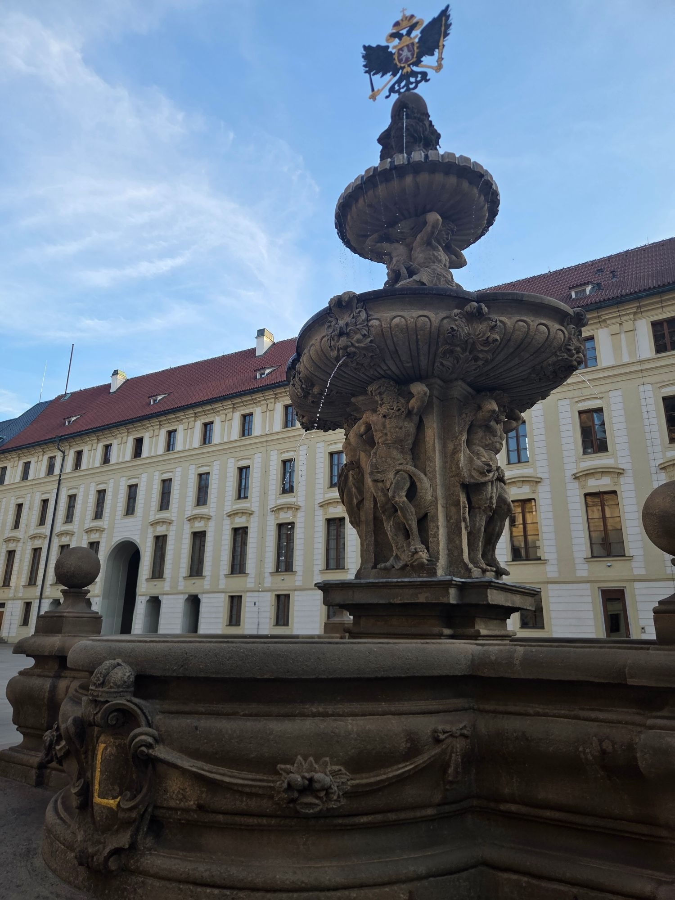
Photo · Munasinghe-Fernando
Up close, the fountain becomes a crowd of characters — a muscled triton straining under the great shell basin, water threading down from a lion-mask spout worn smooth by three and a half centuries.
It is only when you come right up to it that you see how alive the old fountain is: every surface is worked into something — bearded sea-gods, curling fish-tails, snarling lion masks with the water running quietly out of them. The children went looking for faces in the stone and found more than they could count.
Three and a half centuries of Prague rain and Prague hands have softened every edge, until the pale sandstone feels less carved than grown. A small thing to stand and study, in the middle of a very large castle.
— Issue 03 · CZECH REPUBLIC · The Fountain, Up Close —
PRAGUE CASTLE · ST. GEORGE'S BASILICA
The oldest church on the hill.
Tucked behind the great cathedral is something far older and quieter — St. George's Basilica, a Romanesque church begun in the year 920, and the surprise of the whole castle.
Mon 13 Jul 2026Bazilika svatého JiříFounded c. 920 AD · Romanesque
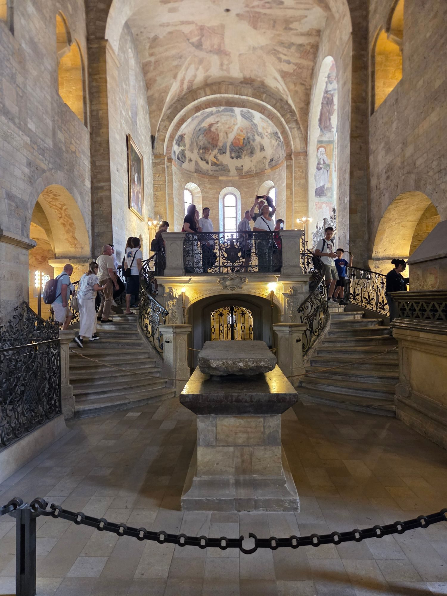
Photo · Munasinghe-Fernando
Inside St. George's — bare golden stone, a timber roof, and a pair of curving baroque staircases sweeping up to the raised choir. Above the apse, faded frescoes of the Heavenly Jerusalem, painted more than seven hundred years ago.
Everyone climbs the hill for St. Vitus, but a few steps behind it stands the real ancient heart of the castle: St. George's Basilica, founded around the year 920 and the oldest surviving church in the whole complex. Its pretty red front is baroque, but step inside and you fall a thousand years — into a bare, golden-stone Romanesque hall, arch upon rounded arch, a plain wooden ceiling overhead and the light coming soft through small windows.
A thousand years older than it looks from the square — the quiet, ancient heart of the castle.
Twin baroque staircases curve up to a raised stone choir, and above it the curved apse still carries its medieval frescoes, ghostly now but unmistakable. After the soaring gold of St. Vitus, this old, quiet, honest church was the one that lingered.
Step through the baroque door and the whole nave opens up ahead — rounded Romanesque arches marching to the raised choir, under a plain timber roof a thousand years old.
Mon 13 Jul 2026Bazilika svatého Jiří · the naveRomanesque · c. 1142 rebuild
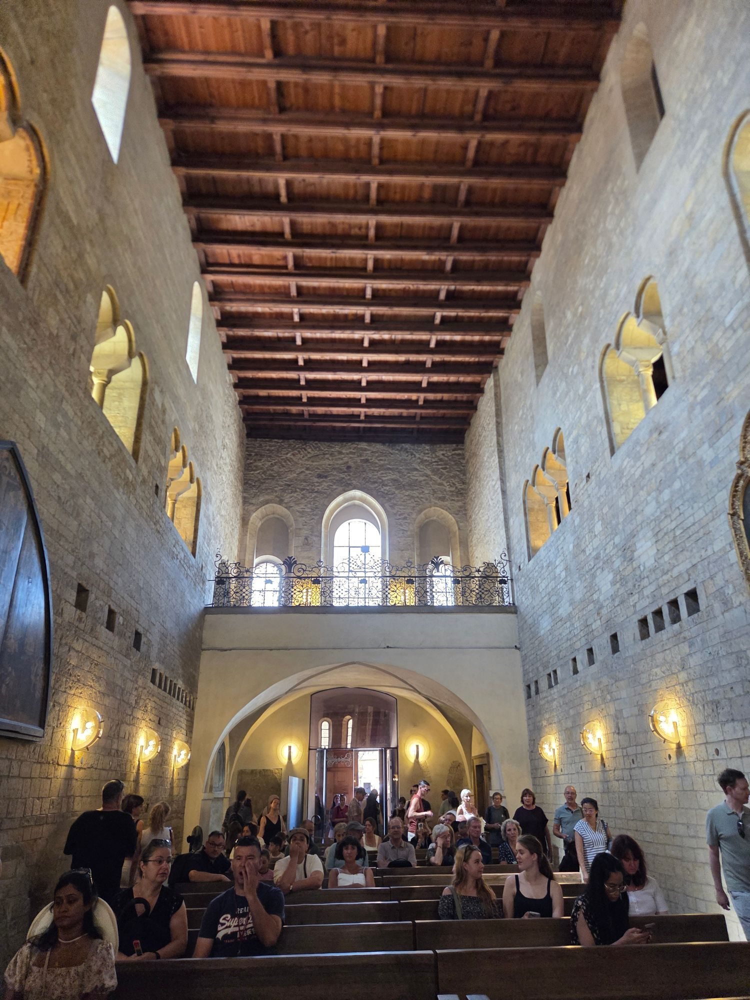
Photo · Munasinghe-Fernando
The long nave of St. George's — bare golden stone, round-headed arches one behind the other, and the tourists small beneath them, necks tipped back at a ceiling that has stood since the 1100s.
From the door, the church is a single long room of honey-coloured stone, the arches marching two by two toward the raised choir at the far end. There is almost no gold here, no glass — just proportion, and age, and light falling in soft bars from the small high windows.
The children lowered their voices without being asked. After the soaring theatre of St. Vitus, this plain, ancient hall felt like the true bones of the hill — the place the whole castle grew up around.
— Issue 03 · CZECH REPUBLIC · The Nave of St. George's —
ST. GEORGE'S BASILICA · A ROYAL TOMB
The grandmother of a saint.
In a side chapel, under glass, lies St. Ludmila — Bohemia's first female saint, and the grandmother who raised Good King Wenceslas.
Mon 13 Jul 2026Tomb of St. LudmilaMartyred 921 AD
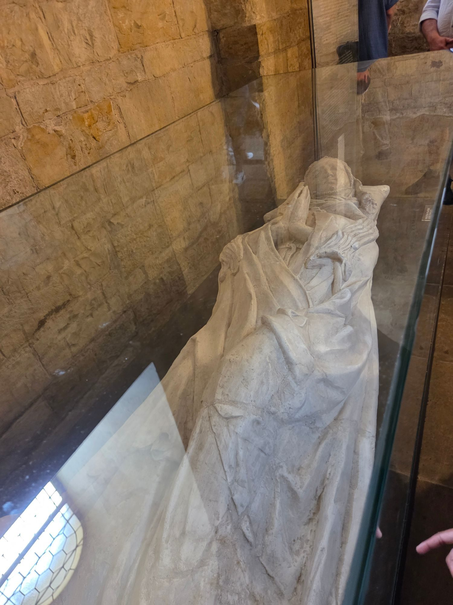
Photo · Munasinghe-Fernando
The Gothic effigy of St. Ludmila, carved in pale stone and kept under glass — the grandmother of St. Wenceslas, and the first woman ever canonised in Bohemia.
The basilica keeps a remarkable resident. In a quiet chapel lies St. Ludmila, carved in pale stone and laid under glass — the first female saint of the Czech lands. She was the grandmother of Wenceslas, the "Good King Wenceslas" of the Christmas carol, and it was she who raised him and brought him up in the faith. For that she made enemies, and in the year 921 she was murdered — strangled, the story goes, with her own veil.
The children pressed close to the glass to look. It is a strange and moving thing, to stand in the oldest church on the hill beside a woman who lived eleven hundred years ago, and whose grandson the whole world still sings about every December.
— Issue 03 · CZECH REPUBLIC · The Tomb of St. Ludmila —
PRAGUE CASTLE · THE OLD ROYAL PALACE
The books that ran a kingdom.
In the Old Royal Palace we found the strangest treasure of all — the painted cupboards and heraldic ceilings of the Land Rolls, the offices where a whole kingdom kept its records.
Mon 13 Jul 2026Starý královský palác · Desky zemskéThe Bohemian Land Rolls
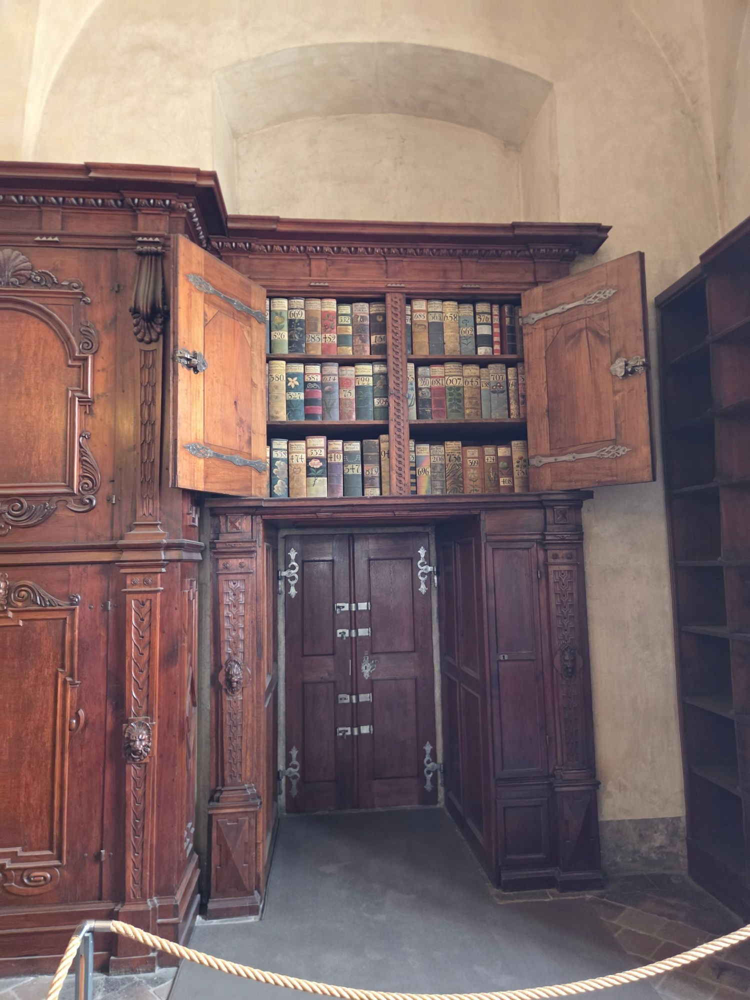
Photo · Munasinghe-Fernando
The cabinets of the Land Rolls — the Desky zemské — their doors thrown open on rows of leather books, each spine hand-painted with a number and a little flower or emblem so the clerks could find it again.
Beyond the churches, the castle keeps its old government rooms — the Old Royal Palace, seat of the Bohemian kings and their courts for centuries. Here we found the Land Rolls, the Desky zemské: the great books in which the whole kingdom's property, laws and lawsuits were written down, locked away in beautiful carved cupboards, each volume's spine painted with a number and a small bright emblem.
A thousand years of a kingdom's memory — kept in painted books behind carved wooden doors.
And the clerks who kept them left their mark: the walls and vaulted ceilings of these rooms are covered, edge to edge, with the painted coats of arms of the officials who served here, a riot of red-and-gold shields watching over the paperwork of a kingdom. Nearby, a little model showed the castle growing across a thousand years, tower by tower, into the city on the hill we had climbed that morning.
— Issue 03 · CZECH REPUBLIC · The Old Royal Palace —
THE OLD ROYAL PALACE · THE HERALDIC HALL
A ceiling of painted shields.
The clerks who kept the kingdom's books left their mark overhead — the vaults of the Land Rolls offices painted edge to edge with the coats of arms of everyone who served here.
Mon 13 Jul 2026Starý královský palác · Desky zemskéHeraldry of the land officials
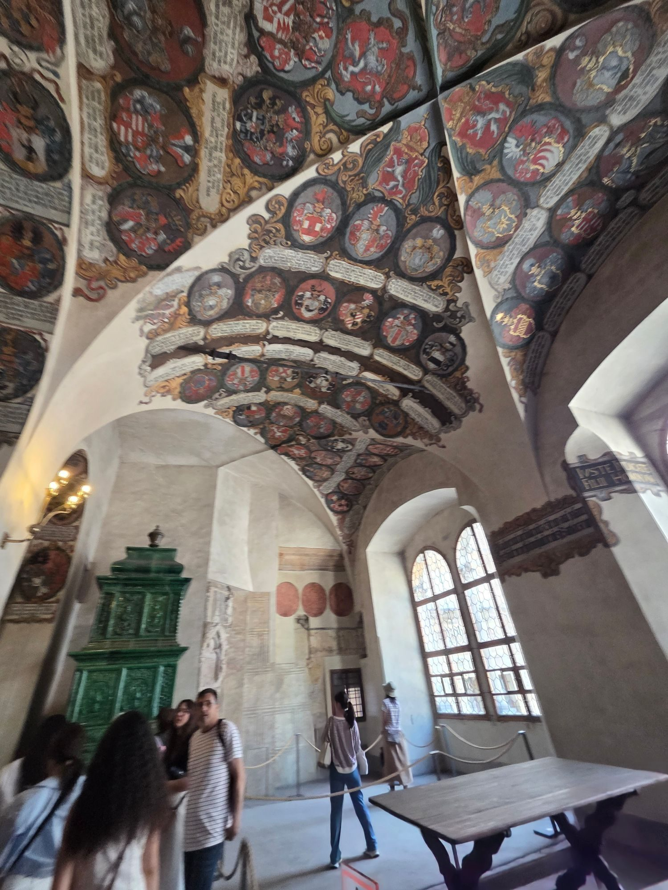
Photo · Munasinghe-Fernando
The vault of the Land Rolls office — every rib and panel crowded with the painted coats of arms of the clerks and officials who ran the kingdom's records, a riot of red, gold and silver watching over the paperwork below.
Look up in these rooms and the whole ceiling is heraldry: hundreds of little painted shields, one for every official who ever kept the Land Rolls, signed into the plaster like a thousand years of names in a visitors' book. The children lay their heads right back to take it in, turning slowly on the spot.
It is a strange kind of monument — not to kings or saints, but to the clerks and record-keepers, the quiet machinery of a kingdom. And every one of them wanted to be remembered on the ceiling.
— Issue 03 · CZECH REPUBLIC · The Heraldic Hall —
THE OLD ROYAL PALACE · THE THRONE
The seat of the Bohemian kings.
At the heart of the palace, beneath a canopy of dark velvet and the silver lion of Bohemia, stands the golden throne itself.
Mon 13 Jul 2026Throne Room · Old Royal PalaceCrown, sceptre & orb of St. Wenceslas
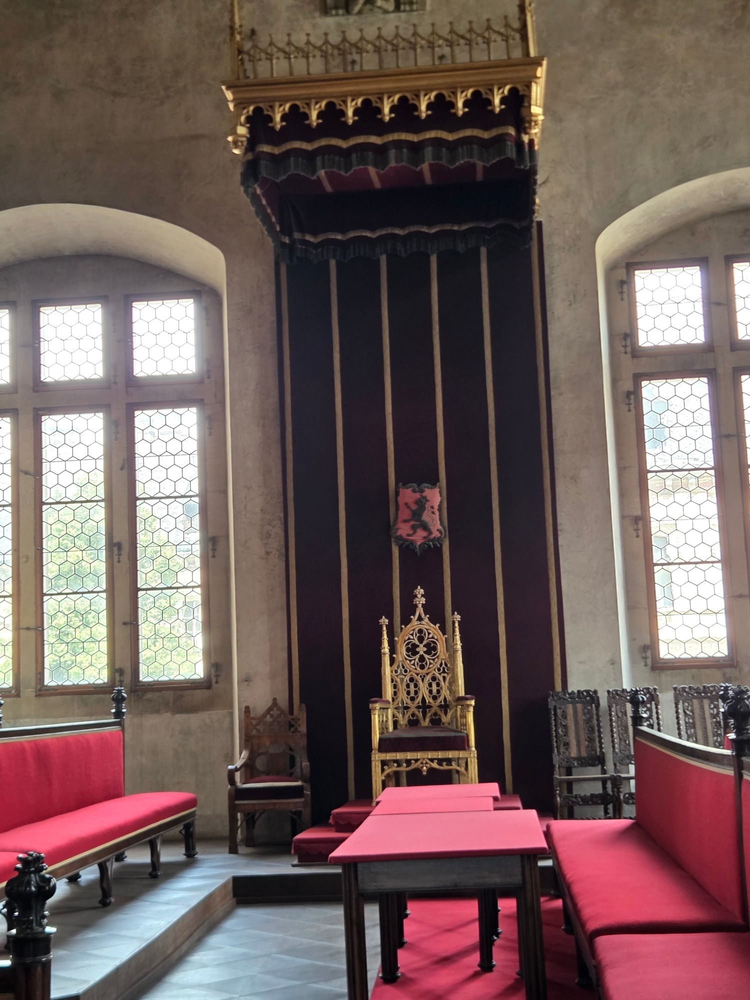
Photo · Munasinghe-Fernando
The throne room — a slender golden Gothic throne beneath a tall velvet canopy, the silver double-tailed lion of Bohemia on the wall above, and red benches for the court ranged along the light-filled windows.
And so we came to the throne itself: a slim golden chair under a great fall of dark velvet, guarded by the silver double-tailed lion that is the badge of Bohemia. Along the walls ran benches of deep red for the courtiers, and tall leaded windows filled the room with a cool northern light. For a thousand years, this hill had been the seat of kings — and here, at last, was the seat itself.
A slim gold chair, a fall of velvet, and the silver lion of Bohemia — the seat of a thousand years of kings.
Nearby, behind glass, glittered the coronation regalia — the jewelled Crown of St. Wenceslas, the golden sceptre and orb that were placed in the hands of every Bohemian king. Gold and rubies and old blue sapphires, laid out on velvet. The children pressed their noses to the glass and imagined the coronations this quiet hilltop has seen.
— Issue 03 · CZECH REPUBLIC · The Throne —
THE OLD ROYAL PALACE · THE CROWN JEWELS
A crown behind seven locks.
Beside the throne, behind glass, blazed the coronation regalia of Bohemia — the Crown of St. Wenceslas, the golden sceptre and orb, gold and rubies and old blue sapphires on velvet.
Mon 13 Jul 2026Korunovační klenotyCrown of St. Wenceslas · 1347
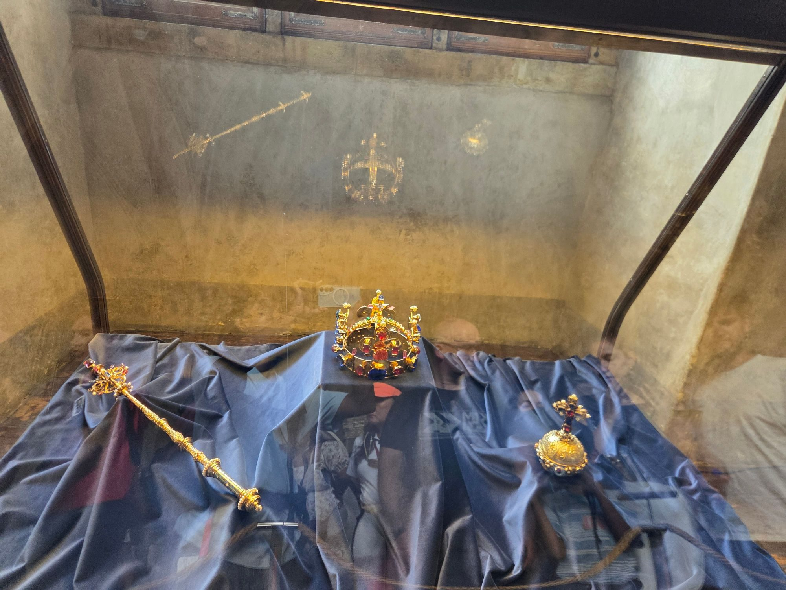
Photo · Munasinghe-Fernando
The Bohemian crown jewels behind glass — the golden Crown of St. Wenceslas thick with rubies, sapphires and pearls, the sceptre and orb beside it. The real set is shown so rarely that most of us only ever meet a faithful copy.
The Crown of St. Wenceslas was made in 1347 for Charles IV, and set with some of the largest sapphires and rubies in Europe. But you cannot simply walk in and see the true jewels: they are locked in a chamber inside St. Vitus behind a door with seven locks, whose seven keys are held by seven different people — the President, the Prime Minister, the Archbishop of Prague among them — and shown to the public only once in a great while.
Seven locks, seven keys, seven keepers — and the crown behind them shown perhaps once in a decade.
So the children pressed their noses to the glass and drank in every ruby, imagining the coronations this hilltop has seen. Whether we were looking at the crown itself or its careful twin, it was the closest any of us will likely come to a real king's crown.
— Issue 03 · CZECH REPUBLIC · The Crown Jewels —
CHARLES BRIDGE · DAY 4
The bridge before the crowds wake.
We left early and walked out onto the Charles Bridge to find Prague's most famous crossing almost entirely to ourselves.
Tue 14 Jul 2026Charles Bridge · Old Town → Malá StranaOn the bridge by 8:15am
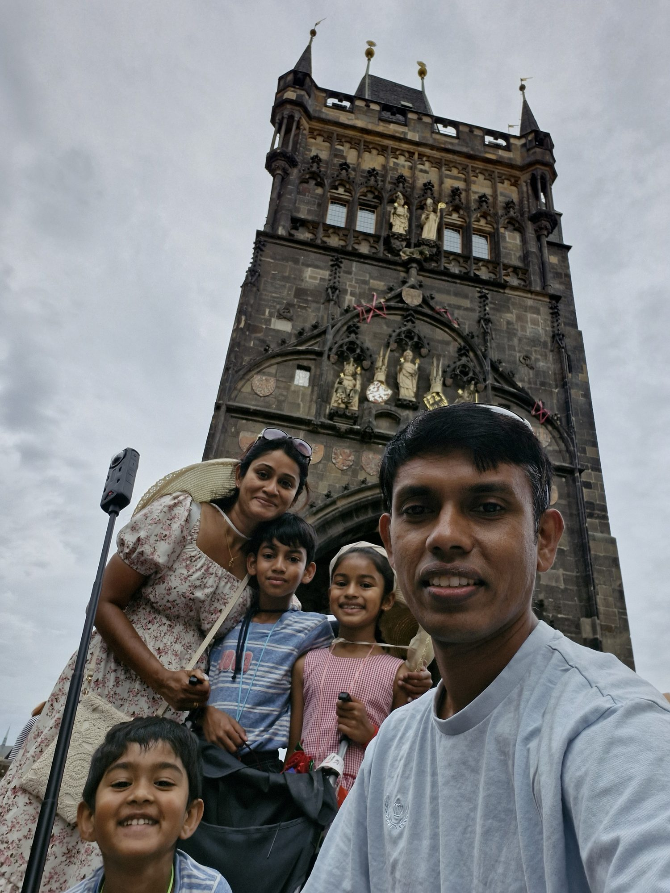
Photo · Munasinghe-Fernando
The five of us at the Old Town Bridge Tower — Charles Bridge almost to ourselves, just after eight in the morning.
The secret to the Charles Bridge is simple: go early. By mid-morning its 515 metres run shoulder to shoulder, but get there before the day fills up and it becomes a different place. We left the apartment at eight and were out on the bridge by a quarter past — and to our delight, at that hour it was almost empty. The most famous crossing in Prague, near-deserted: just us, the thirty baroque saints who have guarded it since the 1700s, and the quiet morning. The bridge has stood since 1357; for a little while, it was almost entirely ours.
The city of a hundred spires — best seen from an almost-empty bridge, early, before the crowds wake.
We walked its full 515 metres across to the Malá Strana side and back, past the thirty baroque saints, the mist lifting off the Vltava, the towers at each end catching the first real light of the day. By the time we turned back toward the Old Town, the first tour groups were only just arriving. We had beaten them by an hour — and it had been worth every minute of the early start.
The city war forgot to destroy
Ask why Prague dazzles where Warsaw, Dresden and Berlin were reduced to rubble, and the answer is a rare stroke of historical luck. While much of Central Europe was flattened by bombing and street fighting, Prague escaped both systematic bombing and a final scorched-earth battle. The result is astonishing: a thousand years of architecture standing shoulder to shoulder — Romanesque cellars beneath Gothic spires, Baroque palaces beside swirling Art Nouveau façades. Walk from the Old Town Square to the Castle and you cross centuries in an afternoon.
The city owes its grandeur to Charles IV, the Bohemian king who became Holy Roman Emperor and made Prague his imperial capital in the 1300s. He founded Charles University, the first in Central Europe, and laid the stone bridge that still bears his name — small wonder poets dubbed it the "City of a Hundred Spires." That continuity held even through 1989, when the peaceful Velvet Revolution toppled communism without shattering a windowpane.
— Issue 03 · CZECH REPUBLIC · Charles Bridge —
CHARLES BRIDGE · THE SAINTS & THE LEGEND
Touch the brass, and you'll come back.
Thirty baroque saints line the Charles Bridge. At one of them we stopped, laid our hands on the worn brass, and made the old wish: that one day we would return to Prague.
Tue 14 Jul 2026Statue of St. John of NepomukRub the plaque · make a wish
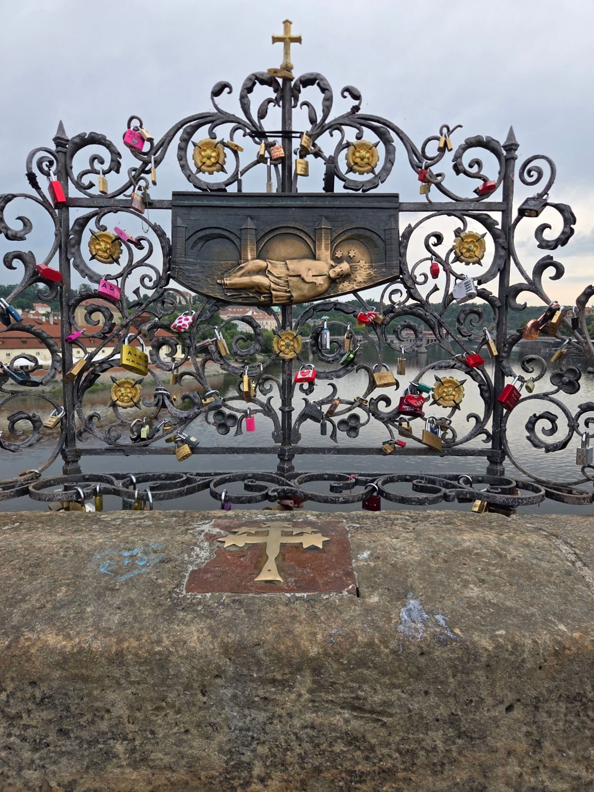
Photo · Munasinghe-Fernando
The brass cross and relief on the parapet — the spot where St. John of Nepomuk was thrown into the Vltava in 1393. Rub the plaque, they say, and you will one day return to Prague. The grille above has quietly filled with lovers' padlocks.
Thirty statues of saints stand along the Charles Bridge, added over the centuries until the crossing became a kind of open-air gallery in stone. The most famous of them marks a dark story: St. John of Nepomuk, a priest thrown from this very bridge into the river in 1393 on the order of the king. A brass plaque and a small cross set into the parapet mark the place — polished bright by centuries of hands.
Lay your hand on the brass, make your wish, and one day the city will call you home again.
So of course we did. Five hands on the warm brass, one shared wish — that Prague would not be a place we saw only once. Above the plaque the iron grille has slowly filled with padlocks, each one a couple's promise clicked shut and the key thrown into the Vltava. A bridge of saints and secrets, and we left a little of our own hope on it.
— Issue 03 · CZECH REPUBLIC · The Bridge Saints —
OLD TOWN SQUARE · THE ORLOJ
A clock that has kept time since 1410.
From the bridge we walked back into the Old Town Square for the thing everyone comes to see — the Astronomical Clock, striking on the hour.
Tue 14 Jul 2026Old Town Hall, Staroměstské náměstíThe Prague Orloj
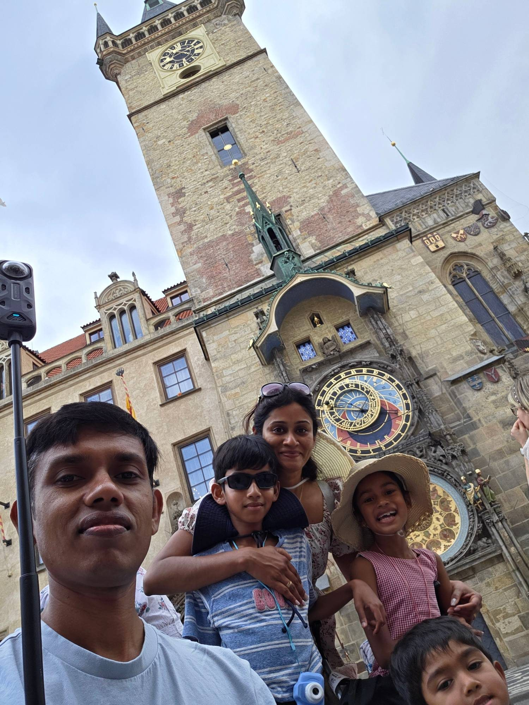
Photo · Munasinghe-Fernando
All five of us beneath the Orloj on the Old Town Hall tower — the oldest astronomical clock in the world still in operation, ticking since 1410.
The Astronomical Clock — the Orloj — has hung on the wall of the Old Town Hall since 1410, which makes it the oldest clock of its kind still working anywhere in the world. It is really three instruments in one: a clock that tells the hour, a golden calendar dial below that turns once a year through the signs of the zodiac, and an astronomical dial that maps the sun and moon against the heavens. Six hundred years of gears, and it still keeps perfect time.
Six hundred years of clockwork — and every hour, on the hour, the Apostles still walk.
We joined the crowd on the hour and watched the show. As the bells sounded, two small windows opened and the twelve Apostles paraded across in turn, while beside the dial a skeleton — Death himself — tolled his bell. It is a one-minute performance that has drawn crowds into this square for six centuries; and when it ended, everyone looked up at the same moment, and smiled.
Selfie stick up, the whole tower behind us — the one photo with all five Munasinghe-Fernandos in it and the Orloj over our shoulders.
Tue 14 Jul 2026Staroměstská radnice · the OrlojOld Town Hall Tower · 1364
Photo · Munasinghe-Fernando
All five of us, squeezed into one frame under the Old Town Hall Tower — Avinesh on the stick, Lana in the middle, Avisha in his shades, Aviann laughing under her hat, and Avin just tall enough to sneak into the bottom corner. Behind us, the Orloj and its golden dials.
Getting all five of us into a single photograph is its own small expedition — someone is always blinking, or wandering off, or hiding. But here, in the crush of the square with the great tower rising behind, we managed it: the whole family in one frame, the six-hundred-year-old clock glowing just over our shoulders.
The tower itself is older than the clock on it — begun in 1364 — and you can climb it for the view over the whole Old Town. We didn't, this time; the show on the hour and a photograph together were enough. Five faces and six centuries, all in one small square.
— Issue 03 · CZECH REPUBLIC · All Five of Us —
OLD TOWN · PRAGUE · IN OUR OWN WORDS
A city that looks like King's Landing.
Prague's Old Town is majestic in a way a single photograph can't hold — a real-life King's Landing of spires and red roofs, where even the shop windows wear the city's grandeur.
Tue 14 Jul 2026Staroměstské náměstí, Old TownThe most beautiful square we saw
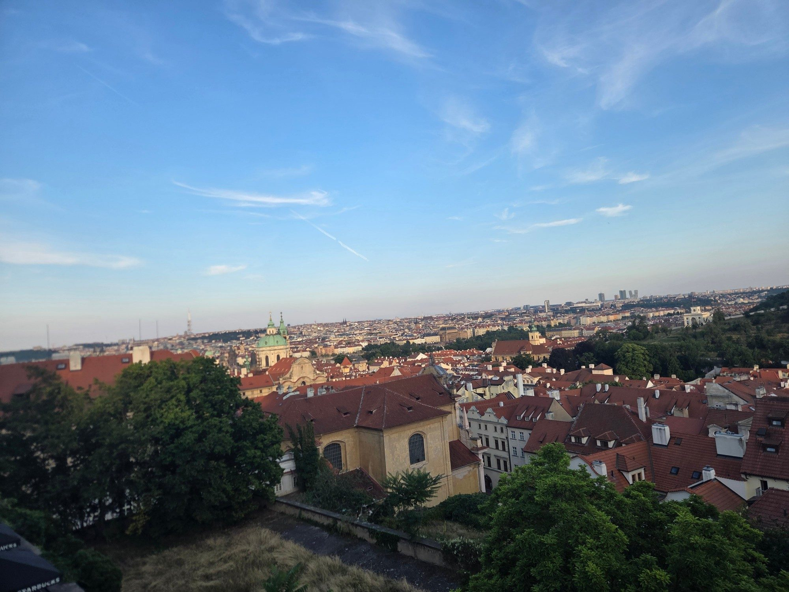
Photo · Munasinghe-Fernando
The view we kept trying to photograph: a sea of red roofs falling away below the castle, the green dome of St. Nicholas rising among them. This, more than anything, is the "King's Landing" of Prague.
There is a word for Prague's Old Town, and the word is majestic. Standing in the great square, ringed by the twin Gothic spires of the Týn Church, the pastel palaces and the old town hall, I kept thinking of King's Landing — the capital city from Game of Thrones — because that is exactly what Prague looks like: a fantasy capital made real, all towers and turrets and red roofs climbing the hills. Except Prague is not a film set. It has stood, and been loved, and survived, for a thousand years.
Prague looks like King's Landing made real — and no single photograph is ever big enough to hold it.
We tried, and failed, to capture it. Every photograph came back smaller than the thing itself; the majesty of Prague simply does not fit inside a phone screen. You have to stand in the middle of it, turn slowly, and let the spires close in around you.
And there is another kind of grandeur here too. The Old Town streets are lined with every luxury brand you could name — the shopfronts as polished and stately as the palaces above them, the shopping every bit as majestic as the architecture. A city that looks like a crown, with shops to match.
— Issue 03 · CZECH REPUBLIC · Old Town —
OLD TOWN · THE STREETS
Down cobbled lanes, hand in hand.
Away from the great square, the Old Town narrows into cobbled lanes — polished shopfronts on one side, a pair of green church domes always waiting at the far end.
Tue 14 Jul 2026Old Town lanes, PragueCobbles, shops & spires
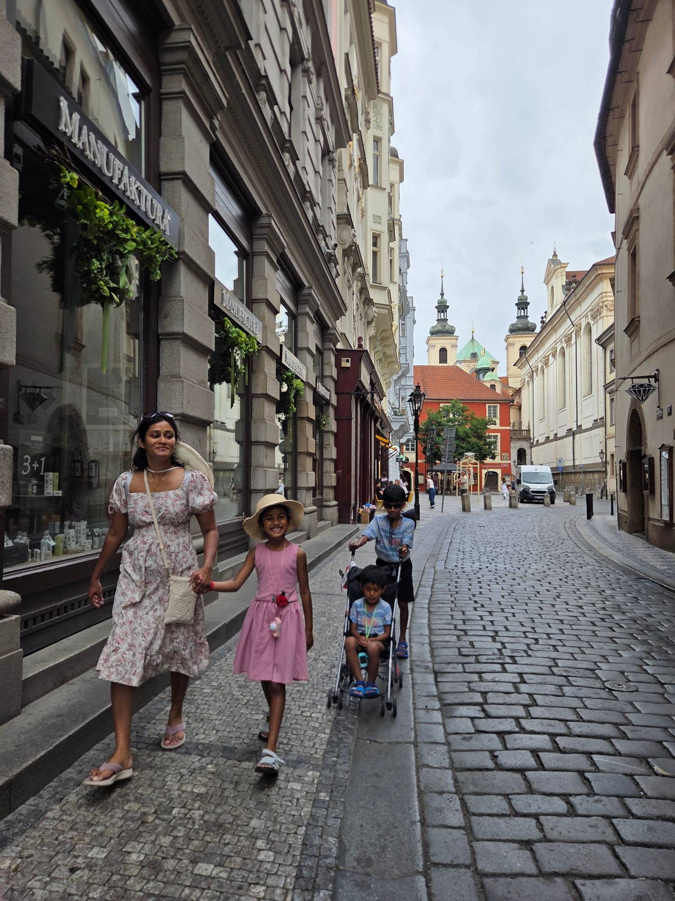
Photo · Munasinghe-Fernando
Walking the lanes near the Klementinum — Lana and Aviann in front, the boys bringing the stroller behind, and the green towers of St. Salvator rising at the end of the street.
The grandeur of Prague does not stop at the square. Its side streets are lined with names you would find on the smartest avenue in any capital — and, tucked among them, the Czech shops we came to love, like Manufaktura with its window full of beer cosmetics and honey soap. Every lane is cobbled, every corner turns up another spire, and at the end of almost every street a pair of green baroque domes seems to be waiting for you.
We walked slowly, in no hurry, the children's hats bobbing along the shopfronts. There are cities you march through and cities you drift through. Prague, we decided, is one to drift.
— Issue 03 · CZECH REPUBLIC · The Streets —
OLD TOWN SQUARE · THE TÝN CHURCH
Two towers of black and gold.
Above the whole Old Town Square rise the twin Gothic towers of the Church of Our Lady before Týn — the picture-book spires that put the "hundred" in the city of a hundred spires.
Tue 14 Jul 2026Kostel Matky Boží před TýnemDoors open at 10am
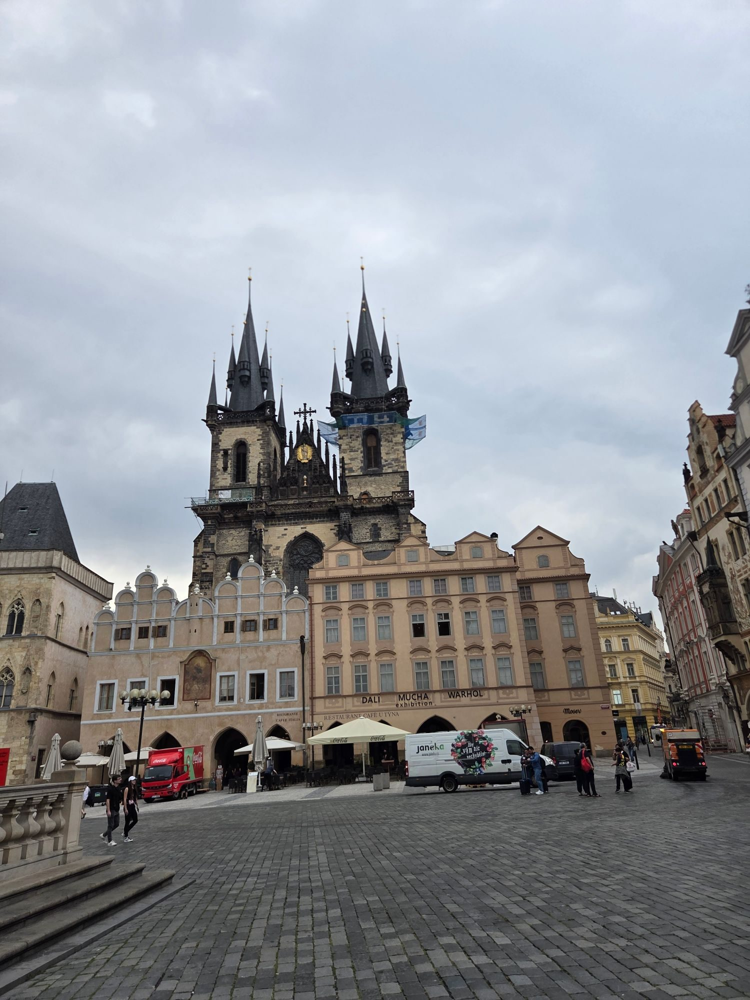
Photo · Munasinghe-Fernando
The Týn Church over the rooftops of the square — two towers eighty metres high, each crowned with a cluster of golden-tipped turrets. Between them, a golden image of the Virgin catches the morning light.
You cannot photograph the Old Town Square without them: the two great towers of the Týn Church, black and bristling with turrets, rising eighty metres over the pastel houses. For centuries this was the main church of the Old Town, and once the great church of the Hussites — the Czech reformers who shook all of Europe a hundred years before Luther.
The doors, we learned, open only at ten in the morning, so we admired it the way most of Prague always has — from below, in the square, heads tilted all the way back. Some buildings you go inside; this one you simply stand beneath.
— Issue 03 · CZECH REPUBLIC · The Týn Church —
OLD TOWN SQUARE · THE TÝN TOWERS
Closer, and stranger still.
A closer look at the Týn towers — not one point each but a whole crown of little turrets, spiky and dark against the sky, like something from a fairy tale.
Tue 14 Jul 2026Kostel Matky Boží před TýnemTowers · 15th century
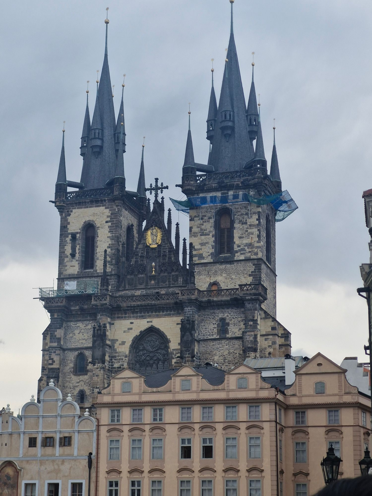
Photo · Munasinghe-Fernando
The Týn towers close up — each great spire ringed by four smaller ones, gold-tipped and bristling, so that the whole thing looks less built than grown, sharp and dark over the pastel square.
From across the square the towers are handsome; up close they are almost alarming — each main spire surrounded by a ring of four smaller pinnacles, every one tipped with gold, the whole cluster black and spiky against the summer cloud. The children decided at once that this was where a wizard would live.
They are not quite a matching pair, either: look closely and one tower is a touch broader than the other — the "Adam and Eve" towers, the Czechs call them. Six hundred years old, and still the strangest, most storybook thing on the whole Old Town Square.
— Issue 03 · CZECH REPUBLIC · The Týn Towers —
OLD TOWN SQUARE · ST. NICHOLAS CHURCH
White walls, and a chandelier of glass.
This one we did step inside — St. Nicholas on the Old Town Square, white and gold and hushed, with a crown of Bohemian crystal hanging in the middle of it all.
Tue 14 Jul 2026Kostel svatého MikulášeBaroque · glass chandelier
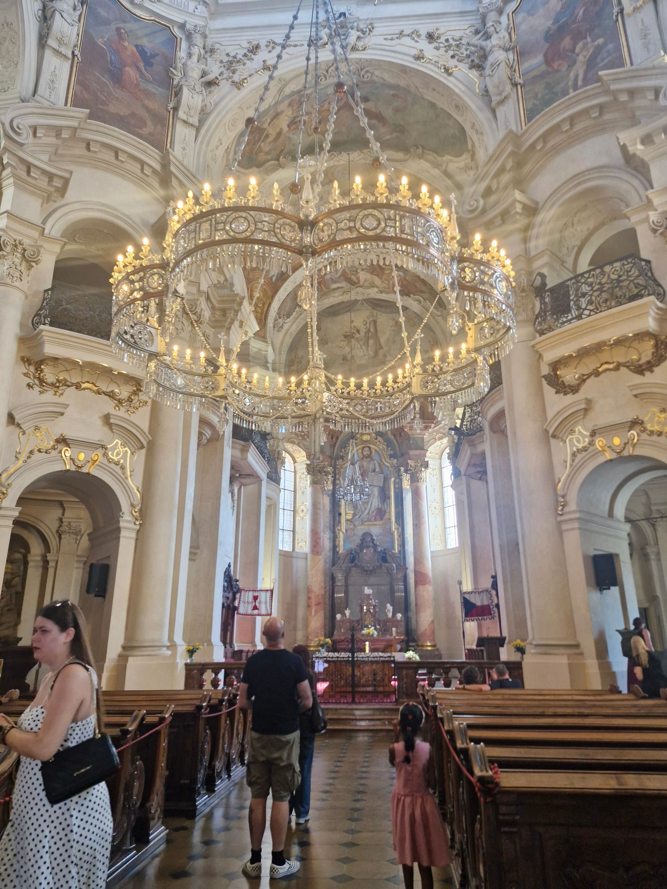
Photo · Munasinghe-Fernando
Inside St. Nicholas — white baroque plasterwork and ceiling frescoes, and the great crown-shaped chandelier of Bohemian glass hanging at the very centre. Aviann stood quite still, looking up.
After the Týn towers we crossed the square to the other great church on it — St. Nicholas, all curves and white stone on the outside, and inside a cool, bright hush that stopped even the children in their tracks. The whole ceiling is one sweep of frescoes and gilded plaster, and hanging from the middle of it is an enormous crown-shaped chandelier of Bohemian crystal, glittering in the dim light.
We stood a while at the back, out of the heat of the square, and let the quiet settle. Two churches face each other across the Old Town Square, and between the Gothic spires and this baroque crown of glass, it is hard to say which stops you more.
— Issue 03 · CZECH REPUBLIC · St. Nicholas —
OLD TOWN SQUARE · ST. NICHOLAS, OUTSIDE
Two green domes over the square.
From the square, St. Nicholas is all baroque swagger — a white stone front between two towers capped with green copper domes, bright against a hot blue sky.
Tue 14 Jul 2026Kostel svatého MikulášeBaroque · finished 1735
Photo · Munasinghe-Fernando
The west front of St. Nicholas on the Old Town Square — curving white baroque stone, statues along the parapet, and two towers topped with domes of weathered green copper, sharp against the July sky.
Before we ever went in, we stood and looked up at the outside: a great sweep of white stone, all curves and columns and saints ranged along the roofline, finished in 1735 by the same family of architects who gave Prague half its baroque churches. The two green copper domes have gone the soft blue-green of old coins.
It is the kind of front that was built to stop you in the street — and it still does. We crossed the square toward it out of the heat, the children counting the statues along the top, before we ever thought to try the door.
Near the river stands a bronze lion with an airman's wings — Prague's thank-you to the men who slipped out of an occupied country to fight in the skies over England.
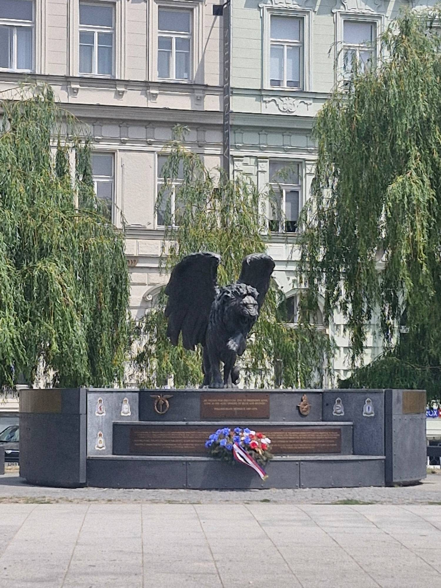
Photo · Munasinghe-Fernando
The Winged Lion
A two-metre bronze on a granite base shaped, from above, like the roundel of the Czechoslovak Air Force.
So few, so much owed
They fought for a country that later jailed them.
Some 2,500 Czechoslovak airmen fled the German occupation and made their way to Britain, where they flew with the RAF through the Battle of Britain and the long war that followed.
Many paid twice for their courage — honoured in London, then imprisoned at home after 1948 for having served in the West. This memorial, funded by Prague's British community, was unveiled in 2014; its sculptor, Colin Spofforth, is an Englishman.
"So much owed by so many to so few."
— Winston Churchill, 1940
— Issue 03 · CZECH REPUBLIC · The Winged Lion —
JEWISH QUARTER · JOSEFOV · IN OUR OWN WORDS
I couldn't get enough of this city.
By half past three I was back in the room — and it wasn't enough. Prague had got under my skin, so we went out again, all of us, and walked the old Jewish Quarter.
Tue 14 Jul 2026Josefov, Prague3:30pm · a second walk
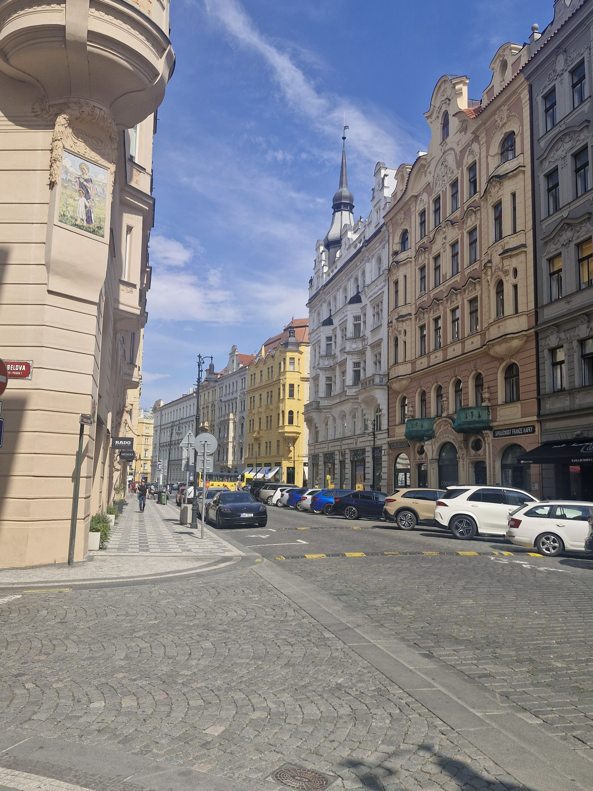
Photo · Munasinghe-Fernando
A Josefov street of yellow, sand-gold walls — the colours that, for a moment, carried me all the way back to Saudi Arabia.
It was half past three when we got back to the room, and I found I was not ready to be finished with Prague. The city had got under my skin. So we went out again, the whole family, and walked — into Josefov, the old Jewish Quarter, one of the oldest and best-preserved in Europe, its synagogues and ancient cemetery folded into a handful of narrow, remarkable streets.
A wall the colour of sand, in the middle of Europe — and suddenly I was a child in Saudi Arabia again.
And there, unexpectedly, the city handed me a memory. Walking those streets I was somewhere else entirely — back in Saudi Arabia, where I spent part of my childhood. It was the colours that did it: the yellow walls, the warm sand tones of the stone glowing in the afternoon light, so like the country of my younger years.
That is the strange gift of travel — how a wall the colour of sand, on a street you have never walked before, can hand you back your own childhood. We had come out for a little more of Prague. Prague gave me Saudi Arabia instead.
— Issue 03 · CZECH REPUBLIC · Josefov —
JOSEFOV · THE OLD JEWISH CEMETERY
Twelve thousand stones, and no more room.
Folded between the synagogues lies the oldest Jewish cemetery in Europe — where, forbidden to spread outward, the dead were laid in layer upon layer for three hundred years.
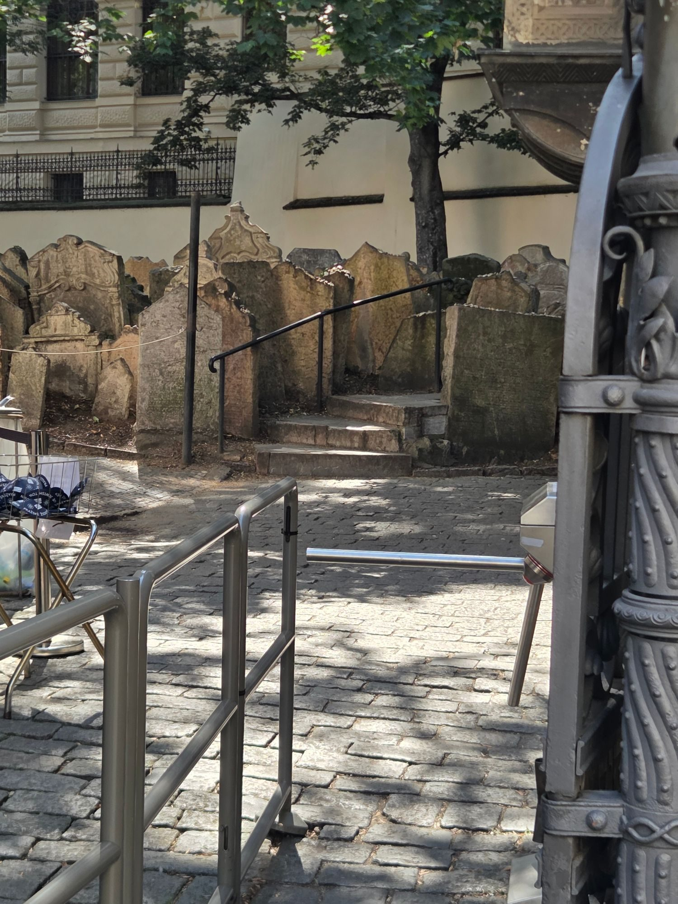
Photo · Munasinghe-Fernando
Starý židovský hřbitov
Tombstones crowding shoulder to shoulder, leaning into one another after six centuries under the trees.
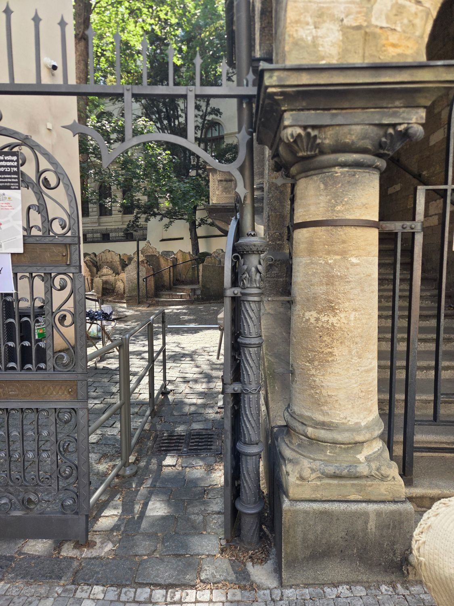
Photo · Munasinghe-Fernando
The gate
An iron entrance off Josefov's lanes, the old stones waiting just beyond.
Layer upon layer
Buried twelve deep.
In use from about 1439 until 1787 and never allowed to grow, it holds perhaps 12,000 visible stones — but as many as 100,000 people are thought to lie below, buried up to twelve deep as each generation raised the earth and set the old headstones higher.
Among them rests Rabbi Judah Loew, the scholar bound forever to the legend of the Golem of Prague.
— Issue 03 · CZECH REPUBLIC · The Old Jewish Cemetery —
JOSEFOV · THE JEWISH TOWN HALL
A clock that runs the wrong way.
In the heart of Josefov stands a pink baroque town hall with two clocks — and the lower one, with its Hebrew figures, turns its hands backwards.
The Jewish Town Hall in Josefov — rose-pink walls and a little black tower. High up sits an ordinary Roman-numeral clock; below it, the famous Hebrew clock whose golden hands run anticlockwise.
Of everything in the old Jewish Quarter, the thing the children will not forget is the clock. The Jewish Town Hall — a pretty rose-coloured building beside the oldest working synagogue in Europe — carries two of them. The upper clock has Roman numerals and behaves itself. The lower clock is marked with Hebrew letters, and because Hebrew is read from right to left, its hands turn the other way: anticlockwise, backwards, the wrong way round.
We stood and watched it for a while, quietly delighted. A whole quarter that has survived everything history could throw at it, keeping its own time, in its own direction, exactly as it always has.
— Issue 03 · CZECH REPUBLIC · The Jewish Town Hall —
★ TASTES OF BOHEMIA · STREET FOOD
Eaten on our feet, between the spires.
We never sat down to a Czech feast — we grazed from carts on the walk down from the castle. Two snacks, both pretending to be ancient, both devoured in minutes.
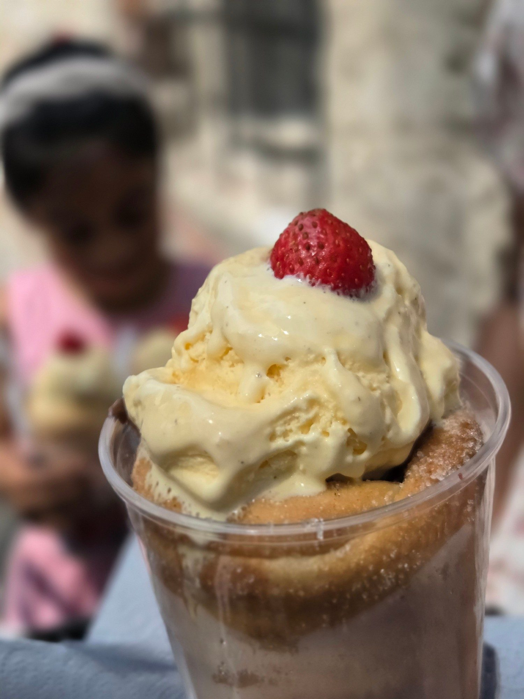
Photo · Munasinghe-Fernando
Trdelník, filled
Warm chimney-cake packed with soft vanilla and a strawberry on top.
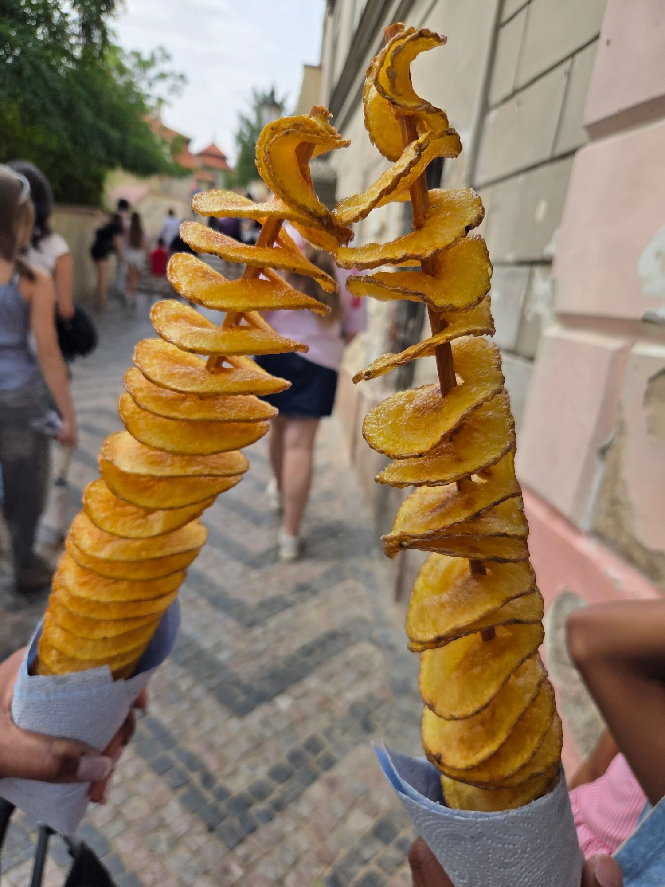
Photo · Munasinghe-Fernando
The spiral potato
One whole potato, cut in a single unbroken coil, skewered and fried crisp.
What we were really eating
The trdelník is hawked on every Prague corner as an "old Bohemian" treat — but it truly belongs to the Hungarian and Transylvanian kürtőskalács: dough wound around a wooden spit (a trdlo), grilled over coals, then rolled in cinnamon sugar. The ice-cream cone is a modern tourist twist, and none the worse for it.
The spiral potato is younger still, and travelled further — Korean street food that found its way to Prague's lanes. Gone in minutes between five sets of fingers.
— Issue 03 · CZECH REPUBLIC · Tastes of Bohemia —
TASTES OF BOHEMIA · ONE CART, FIVE PAIRS OF HANDS
Shared five ways on the castle steps.
One trdelník, one tornado potato, a scoop of vanilla — passed hand to hand down the family until nothing was left but sticky fingers and sugar round three small mouths.
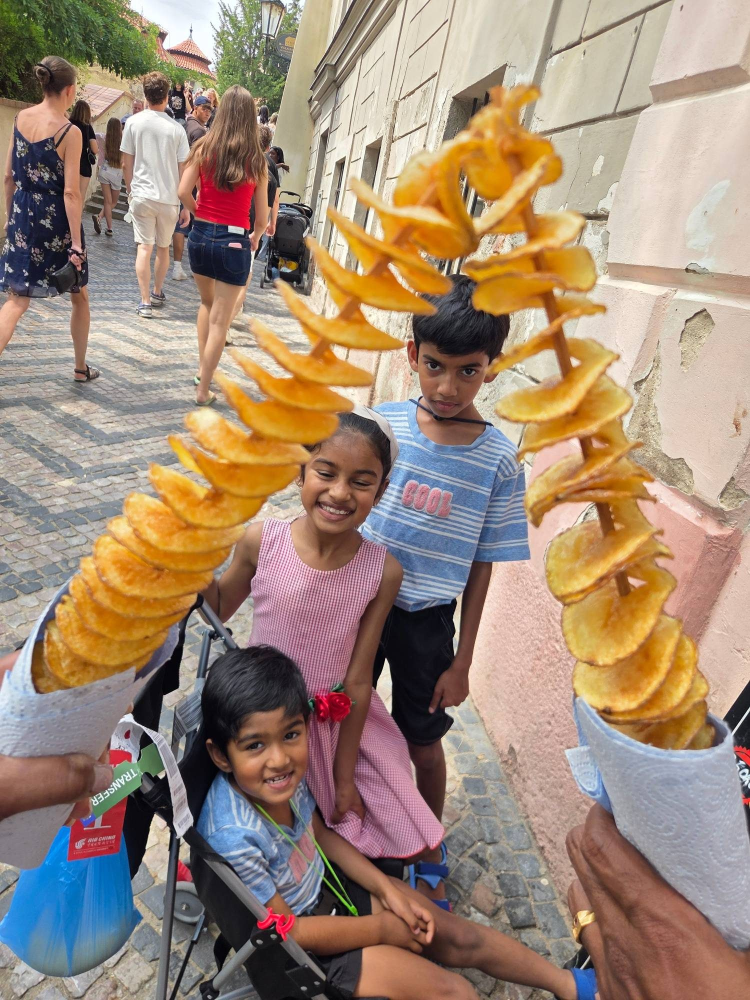
Photo · Munasinghe-Fernando
Two towers of potato
Avisha, Aviann and Avin on the castle steps — a fried spiral taller than the four-year-old, and a whole potato on each stick.
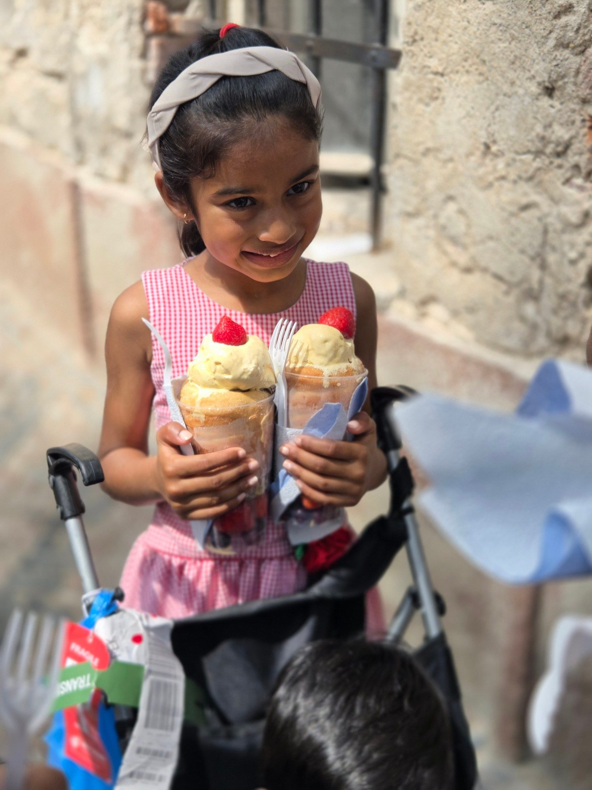
Photo · Munasinghe-Fernando
Strawberry on top
Aviann with both ice-cream trdelníks in hand, before they could melt.
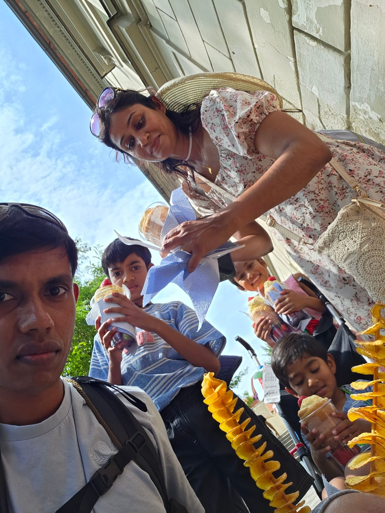
Photo · Munasinghe-Fernando
All five, mid-bite
No table, no cutlery — just the whole family leaning in on the castle hill, ice creams and a potato tower between us.
— Issue 03 · CZECH REPUBLIC · Shared Five Ways —
REFLECTIONS · CZECH REPUBLIC
A city carved in a thousand tiny details.
What we will remember most about Prague is the detail. We loved the cathedral above everything — but it was not alone: every building around it was carved and moulded and ornamented with a thousand small details, as though no surface in the whole city was ever allowed to be plain.
And Prague taught us a lesson we would carry for the rest of the trip: in a July heatwave, you start early. Reach the sights by first light and by one o'clock you have covered almost everything — and beaten both the sun and the crowds. When we crossed the Charles Bridge at a quarter past eight it was nearly empty; the night before, that same bridge had been shoulder to shoulder. Early is everything.
Favourite moment
The cathedral — and the endless carving on every building around it. Nothing in Prague was ever plain.
Hardest moment
The July heat. The trick we learned: start at dawn, and by 1pm you have seen almost everything.
If we come back…
A cooler month, the river cruise we let go this time — and maybe a medieval dinner.